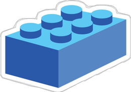
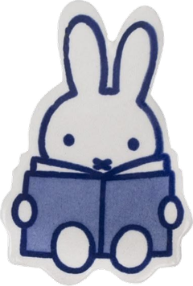

Postmarked from
Canadian at heart, Californian by zip code.

Currently building
LEGO Art Mona Lisa
67%
1,007 of 1,503 pieces

Currently reading
[book title]
[author]
I am a:
{{ word }}
Passionate about social impact, education, and crafting memorable experiences. I care about the details that make complex things feel simple.
Experience
University of Waterloo
Master of Digital Experience Innovation · Part-time
Sep 2026 – Now
Samsung Research America
Product Designer
Aug 2024 – Now
ThoughtSpot (Mode)
Product Designer
Jun 2022 – May 2024
Playground Global
UX Design Intern
Jun 2021 – Dec 2021
Tech4Good
UX Designer
Mar 2020 – Jun 2021
Building community
Chaos Consulting
UX audits & volunteer design work
I take on the occasional UX audit, scrappy redesign, or pro bono project for early-stage teams and nonprofits who need a design eye but not a full hire.
Design Advice
Mentoring, speaking & portfolio reviews
Love talking through the messy parts of breaking into design. Open to portfolio reviews, speaking events, and general career chats.
Creative Tech Design
Founding UCSC's first UI/UX organization
Built the first UI/UX community at UC Santa Cruz, bringing together students and aspiring designers around design education.
Just Design
A design-a-thon for justice
Led a design-a-thon bringing together students, designers, and aspiring leaders to design for social justice.
Grace-Hacks
Hackathon for underrepresented genders
Lead designer for UCSC's hackathon for underrepresented genders: the web experience and full visual identity.